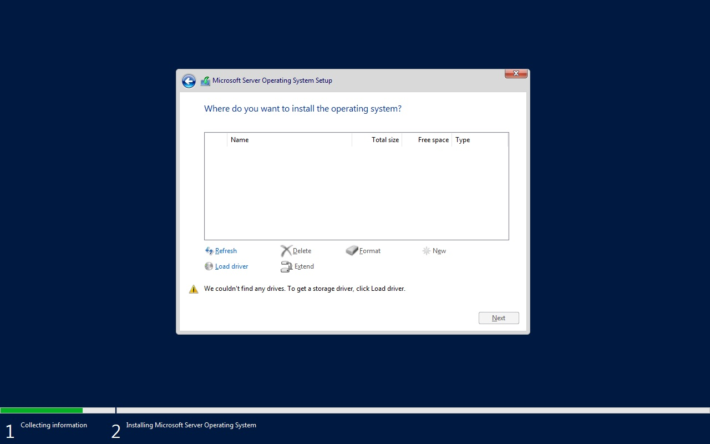
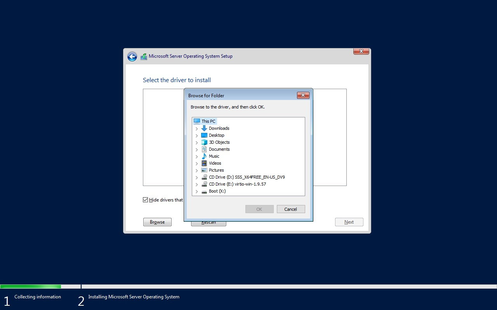

First boot: cloud-init and Sysprep
By the end you can read a cloud-init definition, say how a Windows answer file reaches a VM, and spot the fields the cluster accepts and then silently drops.
Northgate Freight is a made-up company. It wants each new VM to come up with its own name, users and address, with no one logging in to set them. This unit shows how, with real output.
Every definition, command and output in this unit comes from real runs on test clusters, recorded in tutorial chapters 36 and 38.
One cloud-init definition, six parts
Cloud-init is how a Linux guest configures itself at first boot. Select a part of the drawing to see what it does and which lines define it. You can also click a line.
Delivery
The data reaches the VM as a volume named cloudinitdisk. The cloudInitNoCloud type presents it through the NoCloud datasource, which cloud-init recognises on its own.
From vSphere: cloud-init is the counterpart of a Guest OS Customization Specification for Linux.
Watch for this. To keep the data in a Secret, the field is secretRef and the Secret's key must be userData. A field called userDataSecretRef does not exist.
Hostname
Sets the hostname and fully qualified name. manage_etc_hosts: true updates /etc/hosts to include it.
Users
Creates users, gives them SSH keys, and can set a hashed password. openssl passwd -6 makes the hash.
Watch for this. The VM in unit 2.1 set a password and no key, and virtctl ssh failed. Put a key in.
Network
For VMs on a localnet or Layer 2 network, nmcli commands in bootcmd set a static address. bootcmd runs very early, before networking is fully set up.
Watch for this. bootcmd runs on every boot. Without the grep guard on the first line, a CentOS Stream 9 VM had two eth0-static profiles after one restart.
Packages
Installs packages at first boot. Always include qemu-guest-agent: it is the counterpart of VMware Tools, and without it the platform cannot report guest IP addresses, shut the guest down gracefully or quiesce its filesystem for snapshots.
Watch for this. On a RHEL-family guest rpm -q vim says vim is not installed, because DNF resolved the name to vim-enhanced. The install worked. Check with which vim && rpm -qf $(which vim).
Run once
runcmd runs commands once, on first boot only, after networking is up. It suits application setup, not network configuration.
Watch for this. A restart does not re-run cloud-init, except bootcmd. To test a change, delete the VM and create a new one.
cloudInitNoCloud:
userData: |
#cloud-config
hostname: app-server
fqdn: app-server.example.com
manage_etc_hosts: true
users:
- name: admin
groups: wheel
sudo: ALL=(ALL) NOPASSWD:ALL
shell: /bin/bash
ssh_authorized_keys:
- ssh-ed25519 AAAAC3NzaC1lZDI1NTE5AAAAIExample...
- name: appuser
shell: /bin/bash
bootcmd:
- nmcli -g NAME connection show | grep -qx eth0-static || nmcli connection add type ethernet con-name eth0-static ifname eth0
- nmcli connection modify eth0-static ipv4.addresses 172.16.250.5/24
- nmcli connection modify eth0-static ipv4.gateway 172.16.250.1
- nmcli connection modify eth0-static ipv4.method manual
- nmcli connection modify eth0-static ipv4.dns "161.26.0.7,161.26.0.8"
- nmcli connection up eth0-static
packages:
- qemu-guest-agent
- vim
- curl
package_update: true
runcmd:
- systemctl enable --now qemu-guest-agent
Ask the cluster to check a Secret reference
A server-side dry run asks the cluster to check a VM without creating it. Run each command in turn. The output is what the test cluster returned.
A VM's cloud-init volume says userDataSecretRef: {name: ...} and has no other user data. Will the cluster accept it?
Show the answer
The field does not exist, and with no other user-data source the webhook rejects the VM. If the volume also carried inline userData, the field would be dropped silently: the VM is admitted, the inline data is used, and the Secret is not.
oc create -f vm.yaml --dry-run=server
The request is invalid: spec.template.spec.volumes[0].cloudInitNoCloud: must have at least one userdatasource or one networkdatasource set.
A loud failure is the good case. You find out at once.
# the same VM, with secretRef
oc create -f vm.yaml --dry-run=server -o jsonpath='{.spec.template.spec.volumes}'
[{"cloudInitNoCloud":{"secretRef":{"name":"my-vm-cloudinit"}},"name":"cloudinitdisk"}]
secretRef survives. The Secret needs the key userData.
Windows reads an answer file, and the cluster can drop the reference
Windows does not use cloud-init. It reads an unattend.xml answer file from a CD-ROM during setup. KubeVirt builds that CD-ROM from a ConfigMap or Secret with a sysprep volume. Sysprep is roughly the counterpart of a Windows Customization Specification in vCenter. Two submissions of a VM with a sysprep volume, checked with a server-side dry run:
$ oc create -f vm.yaml --dry-run=server -o jsonpath='{.spec.template.spec.volumes}'
# secretName: win-server-sysprep -> the whole reference is gone
[{"name":"sysprep","sysprep":{}}]
# secret: {name: win-server-sysprep} -> survives intact
[{"name":"sysprep","sysprep":{"secret":{"name":"win-server-sysprep"}}}]
Both VMs were admitted without an error. Which one will run its answer file?
Show the answer
Check what the cluster stored.sysprep.secret is a Kubernetes local object reference, and its only field is name. The API server prunes secretName. The VM is admitted, finds no secret, and the sysprep never runs. Read the stored volume back before you power the VM on.
The Secret holds the answer file under a key. For an image that has already been through setup, which key name does Windows read?
Show the answer
KubeVirt accepts either name and raises no error, so a wrong key looks as if it worked. On a Windows Server 2022 evaluation image that had already been through setup, the key autounattend.xml left Windows on the "Hi there" region page. With unattend.xml, setup logged "Found unattend file", the first-logon command ran and Administrator logged on with no one at the console. The installer pipeline in chapter 38 is a different case: it installs from an ISO, and there autounattend.xml was read.
Before first boot: Windows setup cannot see the disk
Windows does not ship VirtIO drivers. A VM installed from an ISO onto a virtio boot disk stops at the disk page until you load the storage driver. These are real screens. Click where you would click. After two misses the right place is marked.

The drive list is empty. Which link fixes that?
Show where
Right. Load driver, then Browse. The storage driver is missing, so setup cannot see the disk.

Which drive holds the VirtIO drivers?
Show where
Right. The CD drive named virtio-win. Here D: was the Windows ISO and E: was virtio-win, so check the volume name, not the letter. For Windows Server 2022 the folder is viostor\2k22\amd64.
Four questions
You restart a Linux VM. Which cloud-init section runs again?
Show the answer
bootcmd runs on every boot. Cloud-init otherwise runs on first boot only, and runcmd runs once. That is why the grep guard matters on a network command.
Where does a sysprep volume attach to the VM?
Show the answer
KubeVirt rejects a virtio CD-ROM at admission with Bus type virtio is invalid for CD-ROM device. The answer file is also read before any VirtIO driver is loaded, so virtio would be no use even if it were accepted.
Northgate leaves qemu-guest-agent out of a Linux image to keep it small. What stops working?
Show the answer
It is the counterpart of VMware Tools. Without it the platform cannot report guest IP addresses, cannot perform graceful shutdowns and cannot quiesce the filesystem for snapshots. Always install it.
Review from unit 2.1. A VM's guest setup sets a password and no SSH key. Will virtctl ssh log you in?
Show the answer
CentOS Stream 9's SSH server has password login turned off for cloud images, so virtctl ssh fails with "Too many authentication failures". Use virtctl console, or put a key in the cloud-init data.
You can set up a VM's first boot
Linux: cloud-init, with secretRef and a key called userData. Windows: a sysprep volume, a CD-ROM on sata, the key unattend.xml. Check what the cluster stored, not what you sent.
Tutorial chapter 36, Configure ROVS VMs on first boot with cloud-init and sysprep, runs everything you just saw. Chapter 38, Install Windows Server VMs on ROVS with VirtIO and RDP, builds the Windows VM end to end.